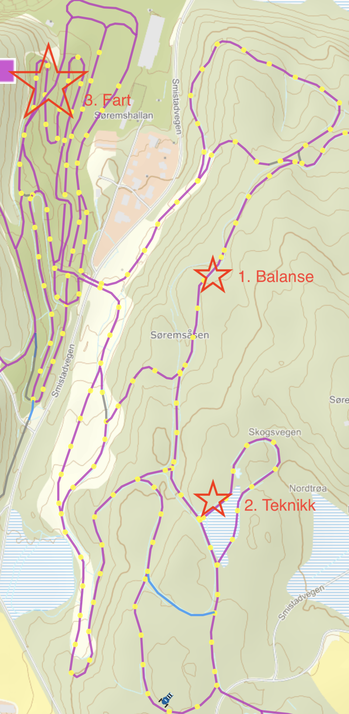

Skitrening Skøyting 11/12
Feb 18, 2021
Synopsis
Fokus på Teknikk (Enkeldans), Fart (Kurveakselerasjon), Felleskap, Skiglede:
- Oppvarming 15'
- Balanse 10'
- Hoveddel Teknikk 30'
- Hoveddel Fart 20'
- Stafett 15'
- Strindheim røp
Oversikt Løype

Opplegg
Oppmøte/Oppvarming
- Kort trenersamtale/koordinasjon under oppmøte
- Rolig oppvarming via brua mot ''Balanseøving´
- En trener i front/midt/bak
- Eventuelt snarvei for de som går veldig sakte.
Balanse
Ide:- Nedbakke uten staver og på en ski (bytt side hver gang)
- Motbakke med tydelig armsving
- Introduser øving, forklar grunnprinsipper og sammenheng
- Barn beveger seg ned og opp, 30 m lengde, 5 m avstand
- Nedover mot fartsretning men helt av side (pass på andre skiløyper)
- Ros, og tilbakemelding
- Kort samling og refleksjon (hvilke side er best i balanse)
Teknikk
Enkeldans
Ide:- Flere øvelser (frem og tilbake) som bygger opp på hverandre
- Focus på armsving og balanse (stå langt og høyt)
- Begge sider, lav frekvens først, varier frekvens etterpå
- Introduser teknikk, forklar bevegelses ide
- Øvelse i stand (se video)
- Fart uten staver
- Fart med en stave på ''høyeside´
- Fart med to staver
Kurve med akselerasjon
Ide:- Gjennom kurver uten tap av fart
- Stå jevnt på den indre ski
- Introduser teknikk, forklar bevegelses ide
- Fart uten staver
- Fart med en stave på ''innside´
- Fart med to staver
Fart
Ide:- Teknikk i stor hastighet
- Fokus på Enkeldans, Kurve, skiglede(!)
- To og to (pass på likt nivå)
- Introduser teknikk, forklar bevegelses ide
- Definer Runde: Start - Mål (sirka 200m gjerne med nedbakke for stor fart og skiglede - rolig tilbake til start)
- To og to med tydelig startkommando (skap litt konkurranseatmosfære)
- 2-3 ganger
Stafett
- Som vanlig eller litt nytt (med balanse element, se video)